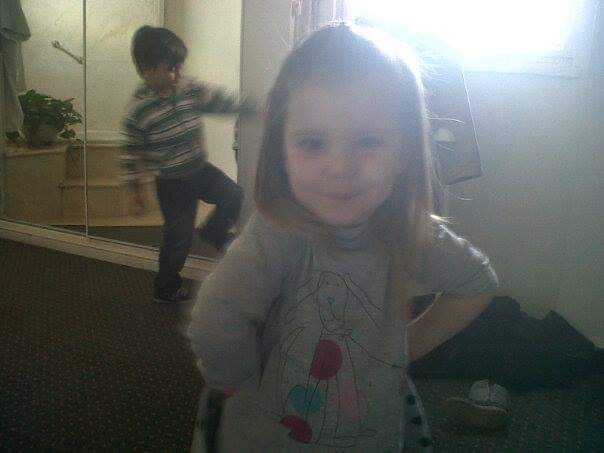
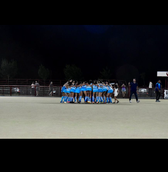

Uma Orcola
Más sobre mi
Holisss les voy a contar un poco sobre mí. Nací el 1° de febrero de 2011, así que soy todo un Acuario, con toda la creatividad y energía que eso implica. Tengo un toque especial que me hace un poco diferente.Aunque siempre tengo sueño, hago chistes malísimos y me río sola como si fueran los mejores del mundo.

Mi deporte
Sixty
Juego al hockey en Sixty y mi número de camiseta es el 36. Juego en dos categorías, por lo que siempre estoy en constante movimiento. Me gusta jugar de delantera y volante porque puedo correr por toda la cancha, aunque también puedo desempeñarme como defensa cuando es necesario.

Mi educación
Escuela de Artes
Estoy en 2° año y me cambié a esta escuela en primer año porque a mis papás no les gustaba mucho la secundaria anterior. Toda la primaria la hice en el IMEI, pero me gusta mucho cómo se estudia acá y la buena onda de la escuela. Además, me hice muy amiga de Bella y trabajamos muy bien juntas.